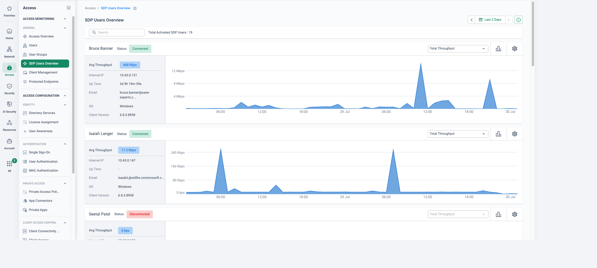
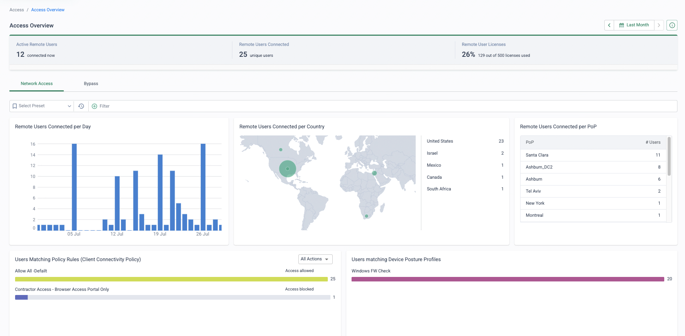

The forced decision point
Cisco has already made the decision to change the client for you. AnyConnect 4.x left software maintenance in March 2024 and reaches end of support on 31 March 2027; the sanctioned path is Cisco Secure Client 5.x — a free upgrade for entitled customers, but still a full client transition: new packaging, new profiles, re-testing on every OS image, a fresh MDM rollout. Meanwhile the ASA 5506-X, 5508-X and 5516-X headends that terminate many of these tunnels reached end of support on 31 August 2026 — those boxes are now running unsupported.
So the question is not whether to run a client migration project — it is whether, having paid for one, you end up with the same architecture. The concentrator model has structural problems no client upgrade fixes: every remote session hairpins through a datacentre appliance that must be sized for the worst peak, patched on the vendor's schedule, deployed in HA pairs and left listening on the public internet. Cato SDP inverts the model — the Cato Client connects to the nearest of Cato's PoPs, where always-on ZTNA, device posture and the full inspection stack are enforced in the cloud, and traffic continues to datacentre or cloud applications directly over the global private backbone. Same migration effort, fundamentally better end state.
This page deliberately scopes to AnyConnect and its headends. If the account also runs Umbrella, Catalyst (Viptela) or Meraki SD-WAN, or ASA/FTD edge firewalls, see the full-estate play: Cisco (Umbrella, AnyConnect & SD-WAN) to Cato.
What the concentrator model costs you
Cisco's own end-of-life calendar sets the deadline; the architecture sets the pain.
Capacity cliffs at peak
Headends are sized for a guessed peak of concurrent tunnels. A snow day, an office closure or an incident-response surge finds the cliff — and the fix is a hardware refresh and licence uplift, not a dial.
Internet-exposed appliances
A VPN concentrator is by design a listening service on the public internet, and VPN headends across the industry are a recurring target for exploitation. Every advisory triggers an emergency patch window on infrastructure that carries all remote access.
Backhaul latency to cloud apps
Full-tunnel users hairpin through the datacentre to reach M365 or Salesforce; split tunnelling avoids the hairpin by sending that traffic outside inspection entirely. Either way, somebody loses.
All-or-nothing network access
A tunnel-group typically lands users on a network segment, not an application. Once connected, lateral reach is governed by whatever ACLs kept pace — the opposite of least privilege.
How many headends, and where? What is the peak concurrent user count — and the licensed ceiling? How long is the split-tunnel exception list, and who owns it? Which posture checks run today (ISE Posture, HostScan), and what do they actually enforce? And how do clients get deployed — MDM, SCCM, or "users download it"?
Where this sits in the Cato SASE platform
- The Cato Client connects to the nearest PoP with SSO and MFA at the IdP — no concentrator to find.
- Device posture is checked continuously at the PoP, and access is to named apps, not a subnet.
- Private apps ride the backbone to the DC Socket; SaaS breaks out at the PoP — no hairpin.
From concentrator to nearest PoP
The Cato Client is a lightweight agent that connects each user to the nearest Cato PoP, authenticating via your IdP (Entra ID, Okta, OneLogin — multiple IdPs supported) with SSO and MFA, and checking device posture continuously throughout the session rather than only at logon. From the PoP, traffic to private applications rides the global private backbone to the datacentre Socket; internet and SaaS traffic breaks out locally through the same inspection stack that protects sites. There is no headend: nothing to size, no HA pair to maintain, no appliance CVE to patch over a weekend.
Nearest PoP, not nearest concentrator
Users connect to the closest PoP and ride the backbone — no trans-continental hairpin to reach the one datacentre that runs the headend.
No internet-exposed headend
The concentrator attack surface disappears. The PoPs are Cato's to operate and patch — your remote access is no longer a weekend CVE drill.
Least privilege by default
Policy grants named applications to named users and groups, gated by device posture — not a routed subnet with an ACL bolted on.
Elastic capacity
No peak-concurrency sizing, no HA pairs, no licence-ceiling surprises — the cloud service absorbs the snow-day surge.
Six steps from headends to SDP
The sequencing below reflects Cato's recommended practice for client migrations: swap cohorts cleanly rather than running two full-tunnel agents side by side, and keep the legacy path warm until the final wave clears its soak window.
-
Discovery & profile inventory
Export what the ASA/FTD estate actually encodes: tunnel-groups and connection profiles, split-tunnel ACLs (the exception list is the app inventory nobody wrote down), ISE/HostScan posture rules, and the SAML configuration — AnyConnect SAML is configured per tunnel-group, so each one maps to an IdP integration on the Cato side. Capture peak concurrent users per headend and the client deployment mechanism (MDM, SCCM) that will drive the swap.
-
Build the Cato side
Access → Device Posture Access → Client Connectivity Policy
Connect the IdP with SSO and SCIM provisioning so users and groups stay in sync. Recreate ISE posture rules as Device Posture profiles — anti-malware present, disk encryption, OS version, certificate — and run them in monitor first. Build the Client Connectivity Policy (who may connect, from where, on what device) and the app-level access rules that replace tunnel-group network grants.
-
Pilot cohort — swap, not dual-run
Cato documents that third-party VPN clients can conflict with the Cato Client — specifically, AnyConnect can override the Cato Client's DNS settings — and running the Cato Client full-tunnel alongside another VPN is not recommended. So the pilot cohort swaps: MDM removes the AnyConnect VPN profile and installs the Cato Client in one change window. Validate SSO, posture verdicts and every app on the cohort's list before scaling.
-
Wave rollout with per-cohort rollback
Roll cohorts by department or region, each with the same MDM-driven uninstall/install and the same acceptance checklist. Rollback is per cohort and mechanical: re-enable the AnyConnect profile via MDM and the user is back on the old path in minutes. Keep the headends licensed and reachable until the final cohort clears its soak window.
-
Decommission the headends
Drain remaining sessions, disable the tunnel-groups, then retire the ASA/Firepower remote-access headends and cancel the associated support renewals and client licences. Anything externally keyed to the VPN egress addresses — partner allowlists, conditional access rules — is re-pointed as part of the wave plan.
-
Optimise
Monitor → Events
Flip Device Posture from monitor to enforce, enable always-on so users are protected before they think about connecting, and tighten access from network-level grants to app-level rules using real traffic evidence from Events. This is where the estate ends up ahead of where a Secure Client upgrade would have left it.
Cohort mechanics, not client cohabitation
Site migrations co-exist by routing; client migrations co-exist by cohort. At any moment during the rollout some users run AnyConnect and some run the Cato Client — but no individual machine needs to run both as full-tunnel agents, which is exactly the combination Cato's documentation cautions against. Where a genuine overlap is unavoidable (a shared lab machine, a long-lived jump host), the workable interim pattern is Secure Client for VPN only while the Cato Client runs split-tunnel — and it should be proven in the pilot, not assumed.
Cohort mechanics
Cohorts follow MDM rings: pilot → early adopters → departmental waves. The swap is one scripted change — remove the AnyConnect profile, install the Cato Client, confirm enrolment — with a per-cohort acceptance checklist of the apps that cohort actually uses.
Helpdesk playbook
During the overlap the first triage question is "which client are you on?". Give the service desk a one-page playbook: how to identify the client, the known-good rollback command per cohort, and when a ticket means "roll this user back" versus "fix the policy".
What stays
ISE remains for wired 802.1X NAC, RADIUS CoA and switch-port enforcement where those are in scope — that is LAN infrastructure, not remote access. Its VPN-posture role is what moves to Cato Device Posture. Set that boundary early.
Rollback stays cheap only while the old path exists. Keep the ASA/FTD headends racked, licensed and monitored until the last cohort completes its soak window — then decommission deliberately, not opportunistically.
How to run the demo
Anchor on their trigger: is it the AnyConnect 4.x deadline, an ASA refresh quote, a headend outage at peak, or an audit finding on network-level VPN access? Run the demo as "the project you already have to do, done once, properly".
-
Connect with the Cato Client
Connect as a demo user — SSO and MFA at the IdP, then show that the client has attached to the nearest PoP. Contrast: no concentrator address, no tunnel-group drop-down, no "which gateway is least busy today?".
-
Show the connection gate
Access → Client Connectivity Policy
Walk the rules that decide who may establish a tunnel at all — user group, country, device posture profile — the control an ASA expresses as a sprawl of tunnel-group and DAP logic.
-
Open a Device Posture profile
Access → Device Posture
Show the checks — anti-malware running, disk encryption, OS version, certificate, client version — and make the point that they are evaluated continuously during the session, not once at logon. This is the ISE Posture replacement conversation.
-
App-level access vs network access
Security → WAN Firewall
Show a rule granting a user group one named application in the datacentre, and the absence of any rule granting the subnet. Then show the same user blocked from an adjacent resource — least privilege as the default, not an ACL project.
-
Close on the session trail
Monitor → Events
Filter events to the demo user: connection, posture verdicts, every allow and block, fully attributed to identity. This is the audit trail a concentrator syslog never quite delivers.
How to prove it in the customer's tenant
The demo argues the architecture; the PoV retires it for real — one cohort wave of 5–20 AnyConnect users swapped to the Cato Client in a single change window and living on it for two weeks, while the ASA/FTD headends stay racked, licensed and completely untouched. Rollback is the AnyConnect profile re-pushed from MDM, which is exactly why the wave can be sold as low-risk. Agree the success criteria below before configuring anything, per Running a Cato PoV: each is measurable, each names its evidence artefact, and each is read out at the weekly sync.
| Success criterion | What we prove | Evidence artefact | Where it lives |
|---|---|---|---|
| The wave swaps clean | Every wave member is off AnyConnect and working through the Cato Client, with zero help-desk tickets attributable to the swap | MDM deployment report for the change window; ticket log filtered to the wave, triaged ticket by ticket | Customer MDM & helpdesk · Access → Users |
| Always-on, MFA, posture — enforced and evidenced | A wave user cannot casually disconnect; sign-in is SSO with the IdP's MFA; a device failing posture is refused at connect | Client refusing disconnect (screenshot); IdP sign-in log for a wave connection; posture block event for the sacrificial device | Monitor → Events · Access → Always-On Policy · IdP logs |
| Private-app parity, least privilege | Every app on the wave's old VPN ACL slice works — through named allow rules over an implicit deny, not a routed subnet | Signed-off per-user acceptance checklist; WAN Firewall rules with hit counts against the ACL export | Security → WAN Firewall · Monitor → Events |
| Concentrator load visibly down | The headend's concurrent AnyConnect session count drops by the wave's size at peak — with no ASA config change | Dated show vpn-sessiondb anyconnect output, before and after; Cato-side mirror of the wave connected |
ASA/FTD CLI · Access → SDP Users Overview |
| Experience baselined vs the VPN | Every wave member has an Experience Monitoring baseline — score, connected PoP, per-app TTFB — set against their VPN-era experience | Remote Users tab captures, weekly and dated, beside the wave's VPN-era complaints/ticket themes | Home → Experience Monitoring |
| Rollback rehearsed, not assumed | One wave machine is deliberately rolled back — AnyConnect profile re-pushed via MDM — and is on the old path within minutes, then re-migrated | Timed rollback record: profile push, reconnect to the headend, re-swap | Customer MDM · ASA/FTD session table |
- Licences — ZTNA/SDP user licences covering the wave for the PoV period.
- Identity first — IdP SSO connected and a dedicated wave group provisioning via SCIM before any policy is written (design choices in Identity Integration Design). MFA lives at the IdP — confirm it is enforced on the Cato SSO app.
- A Socket in front of the private apps — the parity proof needs the datacentre applications reachable behind a Cato Socket (or IPsec site). If nothing is connected yet, that build is week zero, not week one.
- MDM that can do the swap — remove the AnyConnect VPN profile and install the Cato Client in one scripted change window; admin permissions on the device are required for the install. Deploy via GPO/MDM per the KB, not user downloads.
- The wave's ACL slice exported — tunnel-group, split-tunnel ACL and posture rules for the wave's user population. The ACL export is the parity checklist.
- Headends out of scope — write it down: no ASA/FTD configuration changes during the PoV. Rollback stays cheap only because the old path is untouched.
- TLS inspection only if claimed — none of the proofs above needs content inspection; if the customer adds content-level criteria, stage TLSi first per TLS Inspection: Staged Rollout Playbook.
Configuration walkthrough
-
Take the headend baseline and export the wave's slice
Before anything changes, capture the evidence the "load down" and "parity" criteria will be measured against — on the customer's own CLI, captured by their own engineer:
# On the ASA/FTD headend — dated, at the agreed peak hour show vpn-sessiondb anyconnect # concurrent session baseline show run tunnel-group <wave-group> # the wave's connection profile show access-list <split-tunnel-acl> # the ACL slice = parity checklist
Turn the ACL lines into a named application list per user population — that document drives step 4 and the acceptance checklist in step 5.
-
Pin the wave in identity
Access → Users
Create a dedicated IdP group (e.g. AnyConnect-Wave-1), scope SCIM provisioning to it and confirm the members appear in the CMA. Every policy below references this synced group, so wave 2 is a membership change, not a policy project (SCIM User Provisioning).
-
Recreate posture, then gate the connection — monitor-first
Access → Device Posture Access → Client Connectivity Policy
Translate the wave's ISE/HostScan rules into device checks — anti-malware, disk encryption, OS version, certificate — bundled into a profile (checks combine with AND, so the device must satisfy every one). Then add a Client Connectivity rule for AnyConnect-Wave-1 with posture profile Any and action Allow WAN and Internet: the policy is first-match and ends in an implicit any-any block, and nothing is enforced against posture until the wave has a clean baseline week (Device Posture Profiles and Checks, Configuring the Client Connectivity Policy).
-
Build the parity rules — named apps over an implicit deny
Security → WAN Firewall
Recreate the ACL slice as WAN Firewall allow rules: source AnyConnect-Wave-1, destination the named application or host, service/port as exported — every rule tracking events. The WAN Firewall ends in a default any-any block, so the wave gets exactly the applications on its list and nothing else; this is where "lands on a subnet" quietly becomes least privilege. Resist improving the list mid-PoV — parity first, tightening is step 7 (What is the Cato WAN Firewall).
-
Swap the wave — one change window, uninstall then install
The ordering is the honesty: Cato documents that AnyConnect can override the Cato Client's DNS settings, so the wave swaps rather than dual-runs. The MDM job removes the AnyConnect VPN profile first, then installs the Cato Client (admin permissions required), then confirms enrolment. Each user signs in — SSO and MFA at the IdP — and walks their acceptance checklist from step 1. The headends notice nothing except fewer sessions (Distributing Cato Clients to Devices).
-
Turn the keys — posture, then always-on
Access → Client Connectivity Policy Access → Always-On Policy
After the clean baseline week, edit the connectivity rule to require the posture profile, and prove the gate with a sacrificial device that fails a check — the block event is the criterion's artefact. Then add an Always-On rule for the wave so the client cannot be casually switched off; bypass is admin-governed (one-time passcodes valid up to 15 minutes) and worth demonstrating rather than hiding (Protecting Users with Always-On Security).
-
Evidence week — baseline, session count, rollback rehearsal
Home → Experience Monitoring Access → SDP Users Overview
Capture the wave weekly in the Remote Users tab — score, connected PoP, apps, average TTFB per user — and set it against the VPN-era ticket themes (Using the Experience Monitoring Page). Have the customer re-run
show vpn-sessiondb anyconnectat the same peak hour: the count is down by the wave, headends untouched. Finally, rehearse rollback on one machine — re-push the AnyConnect profile via MDM, time the return to the old path, then re-swap. A rollback that has been demonstrated is a risk register entry closed.
What good output looks like




Troubleshooting the wave
AnyConnect leftovers break DNS
A swapped device connects but cannot resolve internal names — classic sign the AnyConnect removal was incomplete, since it can override the Cato Client's DNS settings. Verify the VPN profile and virtual adapter are actually gone, reboot, and fix the MDM uninstall sequence before the next wave inherits the fault.
Wave member missing from the group
A user cannot sign in or matches no rule. Check membership under Access → Users and the IdP provisioning log — SCIM push cycles are not instant. Trigger on-demand provisioning at the IdP rather than widening Cato policy to compensate.
Blocked — but by which implicit deny?
Both the Client Connectivity Policy and the WAN Firewall end in an any-any block. Read the event in Monitor → Events first: a connectivity block means group or posture scoping; a WAN block means the parity list is missing an app the old ACL quietly carried. Fix the right layer.
The ACL wasn't the whole truth
Mid-week a wave user hits an app nobody exported — reachable before only because the tunnel landed on a subnet. That block event is a finding, not a failure: it is the least-privilege argument proving itself. Add a named rule, note it in the register, move on.
Posture fails a compliant device
The anti-malware check names a vendor/product string the installed agent does not match. Loosen to "any supported anti-malware" to confirm the mechanism, then re-tighten with the correct vendor and a minimum-version operator before calling the criterion evidenced.
MFA loops at sign-in
Repeated prompts at client sign-in usually mean an aggressive conditional-access or session-lifetime policy on the Cato SSO app at the IdP, or clock skew on the device. Align the session lifetime with the working day and fix the clock before touching Cato configuration.
Gotchas & exit
- Swap, don't dual-run. Running the Cato Client full-tunnel alongside AnyConnect is the combination the documentation cautions against. If the customer insists on a coexistence machine, scope it as its own test case with the Secure Client-for-VPN-only pattern — proven, not assumed.
- Always-On covers Windows, macOS, iOS and Android — not Linux. If the wave includes Linux devices, scope the "cannot casually disconnect" criterion to the platforms it applies to.
- The session-count evidence is the customer's.
show vpn-sessiondbruns on their headend, captured by their engineer at an agreed hour — agree the capture routine at the workshop so the before/after is like-for-like. - Experience Monitoring has edges — application metrics are calculated for outbound TCP traffic and data can lag by up to 30 minutes; anomaly stories depend on licensing. Do not promise a baseline from minute one of the swap window.
- Zero attributable tickets needs triage discipline. Agree up front how a wave ticket gets attributed — "which client are you on?" first, then cause. A password expiry during the pilot week is not a migration failure.
Unwinding cleanly: rollback is the mechanism you already rehearsed — re-push the AnyConnect VPN profile via MDM per machine and the user is back on the untouched headend in minutes. On the Cato side, relax the connectivity rule's posture requirement to Any before removing anything, disable the Always-On rule, delete the wave's WAN Firewall rules, and de-scope the wave group from SCIM only if it was created for the PoV. If the decision is a yes, keep all of it: wave 1's policy set, checklist and MDM job are the migration plan for waves 2 through N — which is rather the point.
Resources
Documentation
- Universal ZTNA — platform page
- Configuring the Client Connectivity Policy (KB)
- Device Posture profiles and checks (KB)
- Cato Client troubleshooting — incl. AnyConnect DNS override (KB)
- Provisioning users with SCIM (KB)
- Cisco: AnyConnect 4.x end-of-life notice
- Cisco: ASA 5508-X/5516-X end-of-life notice